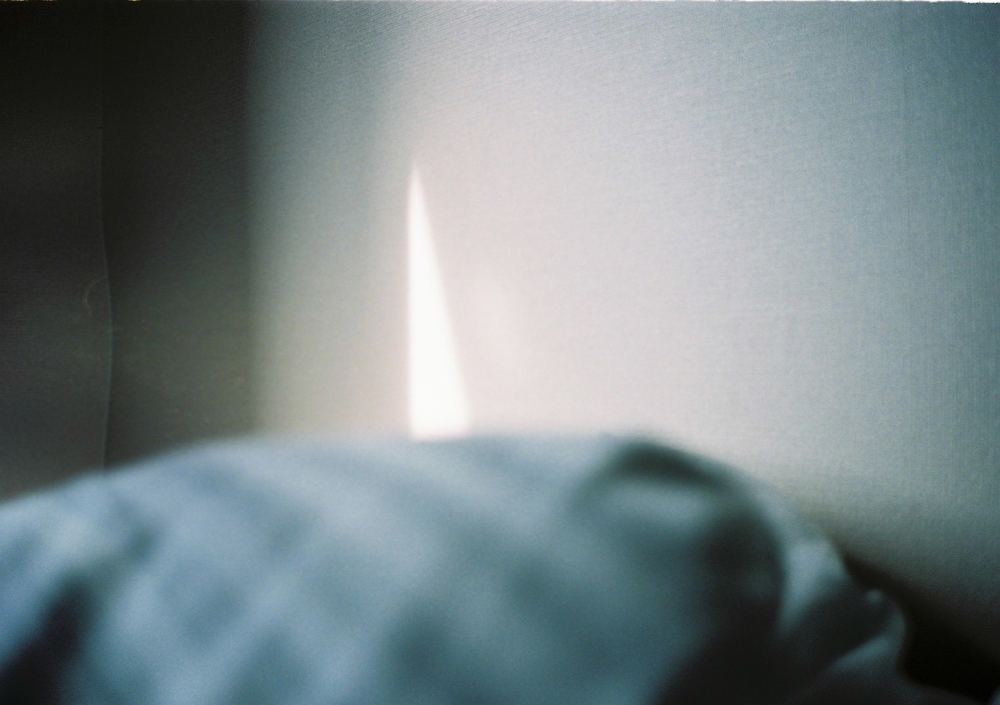

Natsuki Terada / 寺田 夏樹
Photographer
2000年 鹿児島県生まれ。
2023年 ParisのSpéos Fashion, Luxury & Beauty Photography Programにて写真を学ぶ。
2024年 鹿児島大学 法文学部 法経社会学科 卒業。
2025年 イイノ・メディアプロにてスタジオマンとして勤務後、独立。
現在は東京を拠点に、ファッションおよび広告を中心に活動中。
Born in Kagoshima, Japan in 2000.
Studied photography at Spéos Fashion, Luxury & Beauty Photography Program in Paris in 2023.
Graduated from Kagoshima University, Faculty of Law, Economics and Humanities in 2024.
Worked as a studio assistant at Iino Media Pro before going independent in 2025.
Currently based in Tokyo, working primarily in fashion and commercial photography.
Including
ASICS / SKECHERS / Them magazine / UOMO / DEW Magazine / Qetic / noDatum Magazine / foudre magazine /
Keboz / Keboz women / Felisi / MATUREHA._MILL / WAZAVI / ENSW / Kakan / TOHNAI / nest Robe /
CONFECT / Upcycle Lino / INCOMPLETE TOKYO / Markpoint / TOHSHIBA / etc.
